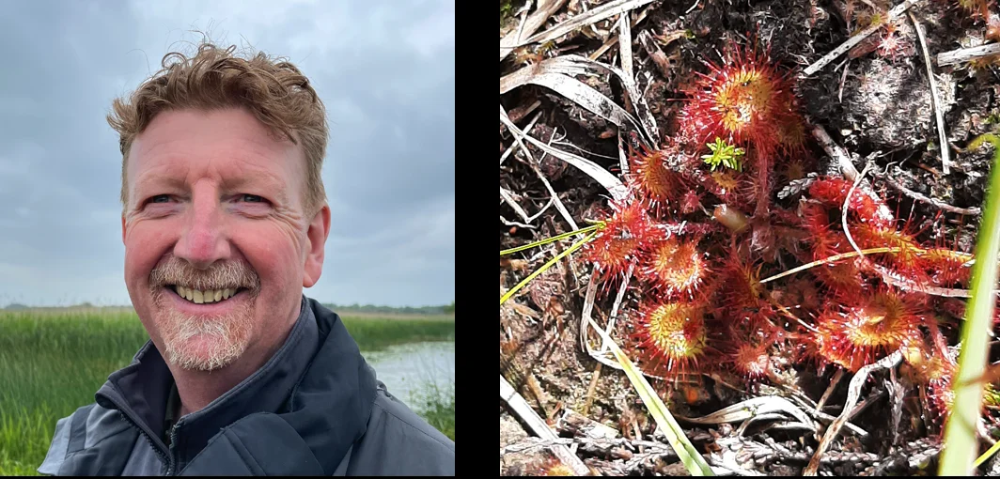

Mel MacGiobúin / Mael Coll Rua

Mel MacGiobúin is a poet and Irish speaker. He writes and perforrms under the nom de plume Mael Coll Rua. His work is included in The Great Book of Ireland, an anthology of modern Irish art and poetry. He performed widely during the 1980s and 1990s. His work has been included in a number of anthologies and a number of chapbooks. In recent years, Mel has given readings as part of the 1916 Performance Arts Club, the Fighting Words creative workshops at Croke Park and has taken part in multi-media performance events, most recently at Common Ground, Bray, Co Wicklow. He is currently creating new written and performance works.
Sundew - Drúchtín móna
Tiny red & yellow plant catches my eye on the verge of Cornafulla (Corr na Fola)
in the rough patch of scutch, I squat down, getting a closer look
A clutch of small spreading red stems with multi-headed rosette and petals
No, mouths with tiny glistening hair-thin teeth open to the light between the shade of grass blades
Aghast at the world or patient and awaiting morsels to drop from the sky
Tongue-coloured landing pad just big enough for annoying persistent buzzing midges
that patrol in the half-lights of the day by the millions, all across the hundreds of acres of this boggy landscape
Awaiting as one Corrmhíol* drops, catching a sweet whiff of aroma floating above the juicy tempting surface
Irresistible - stuck now, the midge’s legs glued
The more they move the more the sticky stuck grabs the legs Then suck, caught in these primitive traps
Sundew, Drúchtín Móna, Turf dewdrop, Drosera, Lustwort, Cailís Mhuireann
A spongy holy grail Names laid over like the compressed layers of sphagnum moss & decades, centuries
of seasonal decay - plants, otter pelt strip, bog butter, bronze armlets, torn scrap of leather book-cover
Chipped spear tip, Tochair planks, elk antlers, gnarly long lengths of oak bark
The fine skeletons of chirping larks, snipes, crakes and sonar hunting bats,
buried stone temples & tombs of lost gods, Esker glacial till & erratics of retreating blue ice-sheets
Down down to the hard pan of impenetrable clays on top of sea-bedded limestones, once swampy bogs too
Lithified, raised, exposed, scraped, crushed crustaceans weird & extinct crinoids, ammonites, trilobites
Over & over one creature's beauty is another’s executioner is another’s lifesaving mealSundew of Cornafulla a dangerous joy
*Corrmhiol - Midge